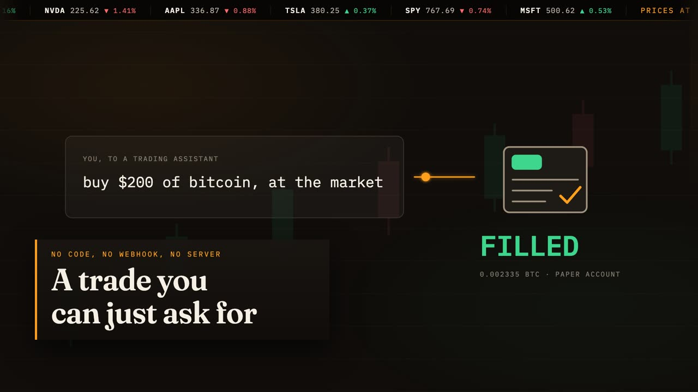
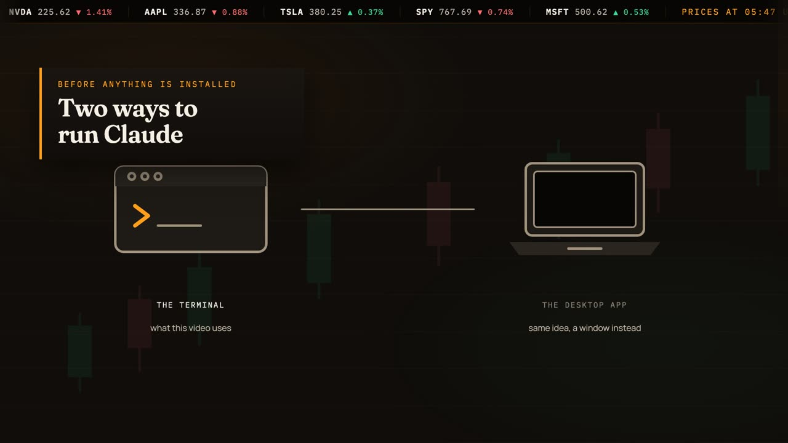
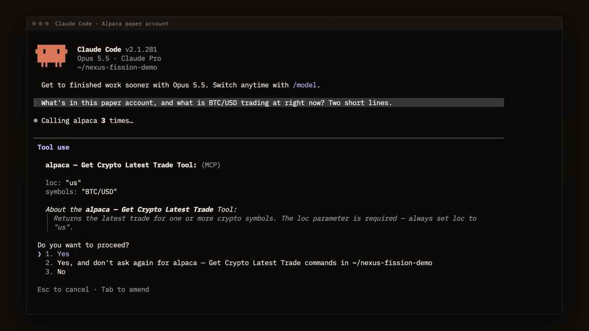
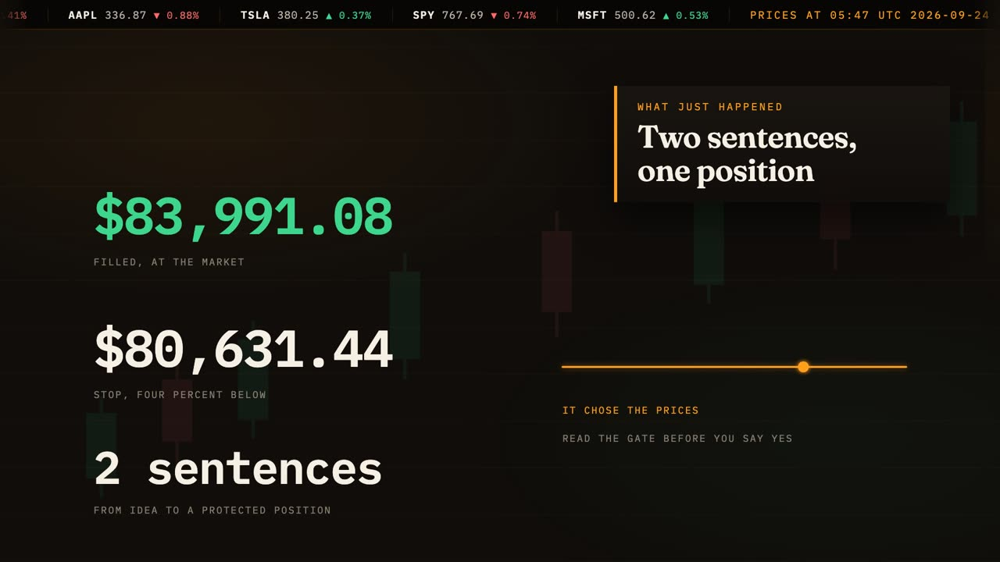

Lessons / AI trading, step by step
Zero-code algorithmic trading using alpaca MCP
I gave Claude a trading rule in one English sentence - buy $200 of bitcoin if it is above its twenty-day average - and it placed the order on a real broker, on a paper account, with no code written at all. The whole thing is on camera: creating the Alpaca paper account, finding the API keys, installing Claude Code, keeping the keys in a file instead of a command, connecting Alpaca's MCP server, and then the trade itself - the tools it can reach, the numbers it works out, the permission prompt it has to get past, the fill, and the stop-loss afterwards. Every step is written out below, so you can follow along.
Prices and numbers are as of the video's publication, September 25, 2026.
The shift Watch from 0:00

This is a trading account, and this is the only thing I am going to write to place a trade in it. One sentence, in plain English.
No webhook, no Python, no server to keep alive. 30 seconds from typing that to a filled order, and everything you are about to see was recorded as it happened, on a paper account with no real money in it.
On this channel I have built the other way many times. Automating a trade meant writing it: a strategy in Python, line after line, before anything could happen at all.
Then a server to keep it alive, and the broker's API on the far side of it, with its own keys and its own rules.
Five things to build and keep running, and something has to notice when one of them falls over at three in the morning. That is the part nobody films.
Here is the whole idea. Between you and your broker sits a small program called an MCP server, which Alpaca publishes.
You talk to Claude. Claude talks to that server. The server talks to Alpaca, and it is the only thing that holds your API keys.
The server offers a list of tools: read the account, fetch price bars, read the news, list orders. Claude can call those freely. The one that places an order has to ask you first, every single time.
Setting it up Watch from 1:20

Right. Nothing installed yet, so let us start there. Claude Code runs in a terminal - the black window with text in it - and that is what I am using all the way through this video, because you can see every step happen.
There is also a desktop app, if a window suits you better. The setup is the same idea either way: the same server, the same keys, the same questions before it trades.
This is the official setup page. I will put the link in the description, but you can find it by searching for Claude Code setup.
Scroll to Install Claude Code, and there are the choices: one line for Mac, Linux and Windows Subsystem for Linux, Homebrew if you use it, WinGet on Windows. Pick your row, copy the line, and paste it into a terminal.
Here it is running for real. I am using the package manager version so it lands in a folder of its own rather than over the top of anything you already have.
30 seconds, and it is on the machine.
Then the one check worth doing: ask it its version. If a number comes back, you are installed. If it says command not found, close the terminal, open a new one, and try again - that fixes it nine times out of ten.
So let us build it from nothing. This is Alpaca's dashboard, on a paper account I made for this channel: $100,000 of pretend money, and a banner reminding me none of it is real.
Everything you need is on this one page. Down here, the API keys: an endpoint, a key, and a button to generate a new pair.
I have blanked mine out, and you should treat yours the same way. The secret is shown once, when you press Generate, and never again.
Now the keys. Never paste them into a command you type, into a chat, or into a script you might share one day.
They go in a small file of their own: one line for the key, one line for the secret. Mine says PK dot dot dot here, because I am not showing you my real one.
Then change the permissions so only you can read that file, and load it into the shell with source. That change of permissions matters: without it, anyone with an account on the machine can read your keys.
And here is how to check it worked without printing them: ask for the names only. Both are set, and neither is on screen. That is the habit to keep.
Now the other half. This is a terminal, and this is Claude Code: the version command tells me it is installed.
One command connects it to the broker. Notice what I am typing where the keys go: the name of a variable, rather than a key. The shell fills it in when the command runs, so the key itself never appears on screen, and never ends up in a video.
It writes the server into this project's configuration.
And listing the servers shows alpaca, waiting for me to approve it the first time I run Claude here. That is it. That is the whole setup.
Before we let it loose, one rule worth knowing. The tools split into two kinds.
Anything that only reads - prices, bars, your balances, your orders - Claude can call whenever it likes. Anything that moves money stops at a gate and waits for you to say yes. Keep that gate. It is the difference between an assistant and an accident.
One more thing worth knowing before we trade, and it is the little line at the bottom of the screen.
Right now it says manual mode: it stops and asks before it does anything at all.
Shift and tab cycles through the others. Accept edits, which is about changing files rather than placing orders.
Plan mode, where it works out what it would do and does none of it - good for trying an idea out safely.
And auto mode, where it stops asking. That is the one to reach for once you trust what it is doing and you are tired of pressing yes.
Shift and tab once more brings you back to manual. My advice: stay in manual while money is involved, and turn auto on for the reading and the research.
Trading live Watch from 4:52

Here is Claude Code with that server connected. I have sped the waiting up where it drags, and the badge in the corner says when.
This is the list of tools it can reach - the account, the prices, the orders, and the one that trades.
First question: what is in the account, and what is bitcoin doing.
The first time it reaches for a tool, it asks.
I say yes, and the answer comes back: just under $100,000, one small bitcoin position left over from an earlier run, and bitcoin trading at about 84,000.
Now the strategy. This is the part that used to be a Python file: is bitcoin above its 20 day average?
It pulls the daily bars itself, works out the average, and answers with the numbers. 83,900 against an average of 79,500: five and a half percent above. It even says which days it used, and that leaving today's unfinished bar out or in does not change the answer. The rule says buy.
Now the real test. $200 of bitcoin, bought at the market so that it fills straight away rather than sitting there waiting for a price.
Watch what happens before a single thing is sent.
And there is the gate. It tells me exactly what it is about to do, and it waits.
I say yes, and only then does the order go out: a couple of thousandths of a bitcoin, filled at a shade under $84,000. It also tells me what it decided on my behalf: crypto orders cannot be day orders, so it made this one good till cancelled.
That is the terminal's version of events, and you should never take one side's word for it. So here is Alpaca's own dashboard, for that same paper account, loaded fresh.
And the list is empty, which is the right answer: it is showing open orders, and a market order does not stay open. It filled the instant it was sent. The one thing we are about to place will sit here, because a stop waits.
Now watch both at the same time: Claude on the left, the broker on the right. One more instruction, and this is the one that matters if the price goes the wrong way. Protect that position with a stop, 4% below what I paid for it.
It works the price out from what I actually paid, not from wherever the market happens to be now.
It asks again, because this is another order, and I say yes again.
And there it is on both sides at once: a stop limit to sell at 80,631, and it tells me two things I did not ask about. It chose a limit price under the stop, and it points out that the bitcoin I bought earlier is not covered by this one.
Verdict Watch from 7:12

So what did it actually do? It read real prices, applied the rule I gave it in words, sized the order, and placed it. Then it protected the position and told me what it had chosen on my behalf.
That last part is the thing to hold on to. It picked the limit price under the stop. It picked good till cancelled. It noticed the older lot was uncovered. Every one of those decisions was in the question it asked me before it sent anything - which is exactly why you read the gate instead of pressing yes.
Once the plumbing is there, the strategy is just what you ask for. A morning briefing on what moved overnight and why.
A weekly rebalance back to your target weights. The same six checks before every earnings trade, asked the same way every time. None of that needs a new script - it needs a better sentence.
If you try this, do it exactly the way I did: a paper account, keys that only reach that account, and the gate left switched on. Watch what it chooses for a week before you let it near real money.
This is education, not financial advice. The setup is in the description, and the next one takes the conversation away and leaves an agent following rules you wrote. See you there.